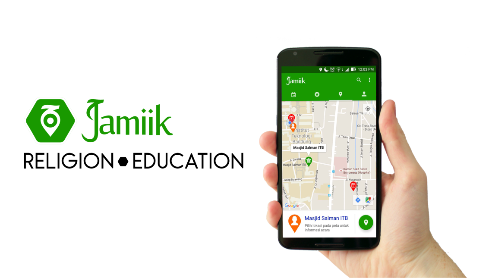

Jamiik merupakan aplikasi berbasis Android yang bertujuan membangun komunitas melalui informasi kegiatan-kegiatan pendidikan dan keagamaan.
Untuk lebih lengkapnya silakan kunjungi website.
Jamiik akan menginformasikan semua kegiatan yang diadakan oleh siapapun seperti Pengurus Masjid, Yayasan, Kepanitiaan atau organisasi lainnya.
Jamiik juga akan menginformasikan profil ulama dan profil penyelenggaran kegiatan beserta agenda-agenda kegiatan-kegiatannya.
Jamiik menyediakan fasilitas/fitur yang menarik bagi pengguna, sehingga mereka bisa:
Dari aktivitas dan feedback dari pengguna, Jamiik akan membuat database, analisa dan laporan yang akan diberikan kepada Ulama dan Penyelenggaran Kegiatan. Laporan ini misalnya terkait dengan:
Dengan fungsi dan fitur seperti ini, Jamiik merupakan tools/alat yang bisa dimanfaatkan oleh Ulama dan Pengelola Kegiatan untuk berhubungan dengan jamaah dengan lebih efektif.
Untuk kemudahaan penggunaan, kami akan menyediakan aplikasi berbasis web yang hanya bisa diakses oleh Ulama dan Pengelola Kegiatan yang sudah terdaftar serta memiliki kode akses (login)
Anda kami ajak untuk menggunakan aplikasi ini secara gratis.
Dengan aplikasi Jamiik ini, Anda akan mudah menginformasikan kegiatan yang akan Anda kelola ke jamaah sasaran. Anda cukup memasukkan data-data kegiatan melalui aplikasi web, kemudian aplikasi Jamiik akan menyebarkan kegiatan-kegiatan tersebut ke semua jamaah. Tidak ada batasan berapa jumlah informasi kegiatan yang akan disebarkan.
Dengan memiliki “official account”, akun yang terverifikasi, Ulama dan Penyelenggaran Kegiatan dapat memberikan informasi detail tentang diri mereka sehingga memudahkan jamaah untuk mengenal dengan dekat. Informasi ini dapat berupa:
Dengan aplikasi Jamiik-web, maka Ulama dan Penyelenggara Kegiatan dapat melihat profil dan kegiatan dari Ulama dan Penyelenggaran Kegiatan lain. Mereka dapat mencari kegiatan bagus apa yang dapat mereka duplikasi menjadi agenda kegiatan mereka ke depan.
Mereka dapat saling bertanya dan berbagi informasi. Mereka dapat saling belajar, berbagi dan saling bantu. Bahkan dari komunikasi ini, mereka dapat merancang dan menjalin kerja sama terkait satu kegiatan atau kerja sama lain yang lebih luas.
Kami membuka diri untuk pertanyaan, masukan dan permintaan kerja sama dari berbagai pihak. Silakan kontak kami untuk pembicaraan yang lebih intensi